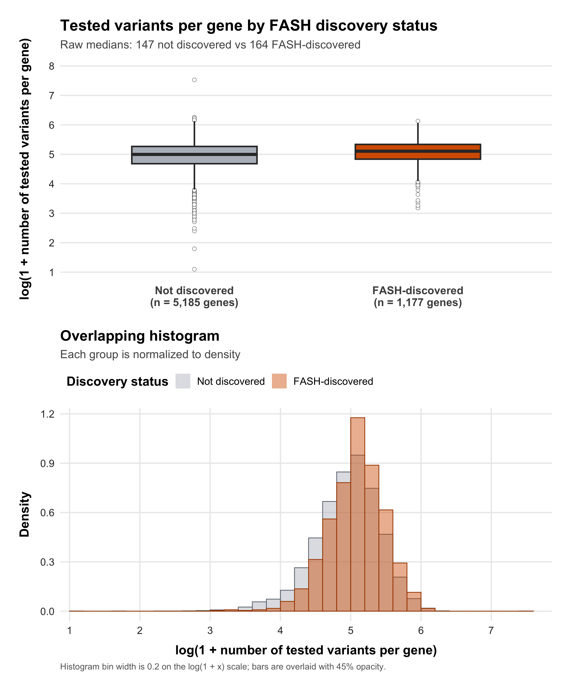

Last updated: 2026-08-19
Checks: 6 1
Knit directory: coderepo-local/
This reproducible R Markdown analysis was created with workflowr (version 1.7.2). The Checks tab describes the reproducibility checks that were applied when the results were created. The Past versions tab lists the development history.
The R Markdown is untracked by Git. To know which version of the R
Markdown file created these results, you’ll want to first commit it to
the Git repo. If you’re still working on the analysis, you can ignore
this warning. When you’re finished, you can run
wflow_publish to commit the R Markdown file and build the
HTML.
Great job! The global environment was empty. Objects defined in the global environment can affect the analysis in your R Markdown file in unknown ways. For reproduciblity it’s best to always run the code in an empty environment.
The command set.seed(20251109) was run prior to running
the code in the R Markdown file. Setting a seed ensures that any results
that rely on randomness, e.g. subsampling or permutations, are
reproducible.
Great job! Recording the operating system, R version, and package versions is critical for reproducibility.
Nice! There were no cached chunks for this analysis, so you can be confident that you successfully produced the results during this run.
Great job! Using relative paths to the files within your workflowr project makes it easier to run your code on other machines.
Great! You are using Git for version control. Tracking code development and connecting the code version to the results is critical for reproducibility.
The results in this page were generated with repository version c87957a. See the Past versions tab to see a history of the changes made to the R Markdown and HTML files.
Note that you need to be careful to ensure that all relevant files for
the analysis have been committed to Git prior to generating the results
(you can use wflow_publish or
wflow_git_commit). workflowr only checks the R Markdown
file, but you know if there are other scripts or data files that it
depends on. Below is the status of the Git repository when the results
were generated:
Ignored files:
Ignored: .DS_Store
Ignored: .Rhistory
Ignored: .Rproj.user/
Ignored: Rplots.pdf
Ignored: analysis/.DS_Store
Ignored: analysis/.Rhistory
Ignored: analysis/site_libs/
Ignored: code/.DS_Store
Ignored: code/.Rhistory
Ignored: code/revision_simulations/.DS_Store
Ignored: data/appendixB/
Ignored: data/dynamic_eQTL_real/
Ignored: data/revision_simulations/
Ignored: data/toy_example/
Ignored: output/dynamic_eQTL_real/
Ignored: output/pdf/
Ignored: output/playwright/
Ignored: output/revision_simulations/
Untracked files:
Untracked: analysis/revision_internal_fash_cl_manuscript_impact.rmd
Untracked: analysis/revision_internal_fash_discovery_variant_count.rmd
Untracked: analysis/revision_internal_fash_linear_real_data_ablation.rmd
Untracked: analysis/revision_internal_fashr_correlated_observation_model.rmd
Untracked: analysis/revision_internal_twenty_variant_per_gene_refit.rmd
Untracked: apps/
Untracked: code/revision_simulations/internal/covariance_estimation/run_design_propagated_null_correlation.R
Untracked: code/revision_simulations/internal/covariance_estimation/run_multigene_null_beta_covariance_exploration.R
Untracked: code/revision_simulations/internal/early_window_sensitivity/
Untracked: code/revision_simulations/internal/fash_cl_manuscript_impact/
Untracked: code/revision_simulations/internal/fash_discovery_variant_count/
Untracked: code/revision_simulations/internal/fash_linear_real_data_ablation/
Untracked: code/revision_simulations/internal/r1_known_truth_genotype_permutation/
Untracked: code/revision_simulations/internal/r1_normality_assumption/
Untracked: code/revision_simulations/internal/selected_signal_genotype_permutation/
Untracked: code/revision_simulations/r5_one_variant_per_gene/
Untracked: code/revision_simulations/shared/build_real_genotype_one_per_gene_cache.R
Untracked: code/revision_simulations/shared/real_genotype_one_per_gene.R
Untracked: code/revision_simulations/shared/test_linear_mixture_fash.R
Untracked: code/revision_simulations/shared/test_real_genotype_one_per_gene.R
Untracked: code/revision_simulations/shared/validate_r1_r2_linear_mixture_pairing.R
Untracked: code/revision_simulations/shared/validate_r1_r2_real_genotype_pairing.R
Unstaged changes:
Modified: analysis/dynamic_eQTL_real.rmd
Modified: analysis/index.Rmd
Modified: analysis/revision_balanced_variant_thinning.rmd
Modified: analysis/revision_combined_spiky_genotype_simulation.rmd
Modified: analysis/revision_functional_testing_simulation.rmd
Modified: analysis/revision_genotype_level_simulation.rmd
Modified: code/revision_simulations/README.md
Modified: code/revision_simulations/internal/covariance_estimation/run_global_pca_factor_visualization.R
Modified: code/revision_simulations/r1_random_bspline/reporting.R
Modified: code/revision_simulations/r1_random_bspline/run_random_bspline_mc_replication.R
Modified: code/revision_simulations/r2_spiky_transient/reporting.R
Modified: code/revision_simulations/r2_spiky_transient/run_combined_spiky_genotype_simulation.R
Modified: code/revision_simulations/r2_spiky_transient/run_spiky_transient_mc_replication.R
Modified: code/revision_simulations/r3_functional_testing/reporting.R
Modified: code/revision_simulations/r3_functional_testing/run_matched_functional_testing_mc_replication.R
Modified: code/revision_simulations/shared/simulation_functions.R
Note that any generated files, e.g. HTML, png, CSS, etc., are not included in this status report because it is ok for generated content to have uncommitted changes.
There are no past versions. Publish this analysis with
wflow_publish() to start tracking its development.
The fixed FASH result contains 9,205 called pairs from 1,177 genes. The two comparison groups contain 1,177 FASH-discovered genes and 5,185 not-discovered genes.
Both panels apply log(1 + x) to each gene-level variant
count. The upper panel shows boxplots and reports medians on the
original count scale. The lower panel overlays the two histograms after
normalizing each group to density.
plot_variant_count_distribution_panel()
Boxplot and overlapping density-normalized histogram of log(1 + number of tested variants per gene) by BF-adjusted FASH-IWP1 discovery status.
All values in the table below are computed on the original variant-count scale.
render_internal_table(
group_summary_display,
align = "lrrrrr",
minimum_width = "780px"
)| Discovery status | Genes | Mean | Standard deviation | Median | IQR (Q1-Q3) |
|---|---|---|---|---|---|
| Not discovered | 5,185 | 155.30 | 71.86 | 147 | 107-193 |
| FASH-discovered | 1,177 | 173.26 | 67.22 | 164 | 125-207 |
The analysis uses a one-sided Wilcoxon rank-sum test on the original variant counts, with the FASH-discovered group supplied as the first sample and the not-discovered group supplied as the second sample.
Test settings:
alternative = "greater"exact = FALSEcorrect = TRUErender_internal_table(
wilcoxon_test_table,
align = "lllllrr",
minimum_width = "1420px"
)| Method | Null hypothesis | Alternative | Calculation | Continuity correction | W statistic | p-value |
|---|---|---|---|---|---|---|
| Wilcoxon rank sum test with continuity correction | The two group distributions are equal | FASH-discovered values tend to be larger | Normal approximation | Yes | 3,549,728.5 | 9.697e-19 |
render_internal_table(
input_provenance_table,
align = "llrll",
minimum_width = "1320px"
)| Input | Path | Bytes | Modified | MD5 |
|---|---|---|---|---|
| BF-adjusted FASH-IWP1 fit | output/dynamic_eQTL_real/fash_fit1_update.RData | 581,122,554 | 2026-01-20 20:29:11 UTC | af46b39a04b241cf1e6116a645dbcc3e |
| Per-gene tested-variant counts | output/revision_simulations/internal/one_variant_per_gene_variant_counts.csv | 138,777 | 2026-08-07 05:30:15 UTC | c3329934a69c8f9ad4fe724d18b1c767 |
Page-specific source files:
code/revision_simulations/internal/fash_discovery_variant_count/reporting.Rcode/revision_simulations/internal/fash_discovery_variant_count/test_reporting.RReproduction commands from the workflowr project root:
Rscript --vanilla \
code/revision_simulations/internal/fash_discovery_variant_count/test_reporting.R
Rscript --vanilla -e \
'workflowr::wflow_build("analysis/revision_internal_fash_discovery_variant_count.rmd")'
sessionInfo()R version 4.5.1 (2025-06-13)
Platform: aarch64-apple-darwin20
Running under: macOS Sequoia 15.6.1
Matrix products: default
BLAS: /System/Library/Frameworks/Accelerate.framework/Versions/A/Frameworks/vecLib.framework/Versions/A/libBLAS.dylib
LAPACK: /Library/Frameworks/R.framework/Versions/4.5-arm64/Resources/lib/libRlapack.dylib; LAPACK version 3.12.1
locale:
[1] C.UTF-8/C.UTF-8/C.UTF-8/C/C.UTF-8/C.UTF-8
time zone: America/Chicago
tzcode source: internal
attached base packages:
[1] stats graphics grDevices utils datasets methods base
other attached packages:
[1] workflowr_1.7.2
loaded via a namespace (and not attached):
[1] gtable_0.3.6 jsonlite_2.0.0 dplyr_1.1.4 compiler_4.5.1
[5] promises_1.5.0 tidyselect_1.2.1 Rcpp_1.1.1-1.1 stringr_1.6.0
[9] git2r_0.36.2 dichromat_2.0-0.1 callr_3.7.6 later_1.4.4
[13] jquerylib_0.1.4 scales_1.4.0 yaml_2.3.12 fastmap_1.2.0
[17] ggplot2_4.0.1 R6_2.6.1 labeling_0.4.3 patchwork_1.3.2
[21] generics_0.1.4 knitr_1.50 tibble_3.3.0 rprojroot_2.1.1
[25] RColorBrewer_1.1-3 bslib_0.9.0 pillar_1.11.1 rlang_1.2.0
[29] cachem_1.1.0 stringi_1.8.7 httpuv_1.6.16 xfun_0.55
[33] S7_0.2.1 getPass_0.2-4 fs_1.6.6 sass_0.4.10
[37] otel_0.2.0 cli_3.6.6 withr_3.0.2 magrittr_2.0.5
[41] ps_1.9.1 grid_4.5.1 digest_0.6.39 processx_3.8.6
[45] rstudioapi_0.17.1 lifecycle_1.0.5 vctrs_0.7.3 evaluate_1.0.5
[49] glue_1.8.1 farver_2.1.2 whisker_0.4.1 rmarkdown_2.30
[53] httr_1.4.7 tools_4.5.1 pkgconfig_2.0.3 htmltools_0.5.9